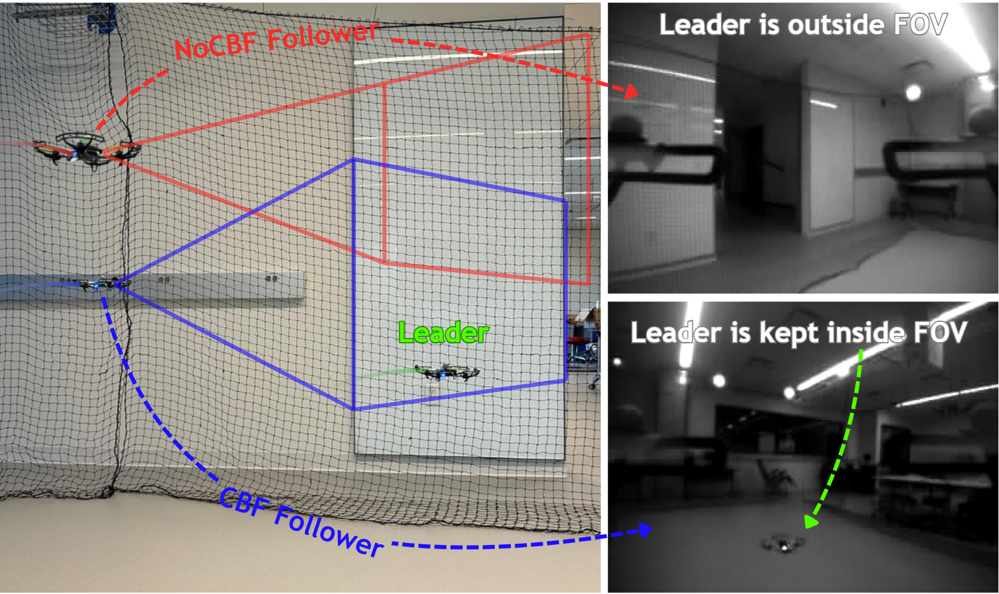

Demonstration of the proposed perception-aware safe control framework: the follower autonomously maintains the leader within its camera Field-of-View (FOV) despite conflicting formation commands.
Abstract
This letter proposes a distributed 3D leader-follower formation (3D-LFF) control framework for multi-UAV systems that achieves formation tracking while enforcing perception safety constraints. Maintaining safe, vision-based 3D-LFF is challenging because onboard cameras impose strict Field-of-View (FOV) limitations, and demanding formation commands can drive the leader outside the follower's camera frustum, resulting in loss of visibility. To address this issue, we develop a perception-aware safe control architecture that guarantees visibility by construction. First, we derive a relative kinematic model in a line-of-sight coordinate representation and design a distributed 3D-LFF tracking controller using only locally available relative states. Next, we embed the nominal formation controller within a Control Barrier Function-based Quadratic Program (CBF-QP) safety filter that minimally modifies the commanded velocities to maintain the leader inside the follower's camera frustum while preserving formation tracking whenever feasible. Gazebo simulations and Crazyflie hardware experiments validate the proposed approach, demonstrating accurate formation tracking and effective FOV enforcement, including scenarios in which the nominal desired formation conflicts with visibility constraints.
Introduction and System Formulation

Perception-aware leader-follower safe control. Without perception constraints, the baseline follower (NoCBF, red) loses sight of the leader during maneuvers. In contrast, the proposed CBF-equipped follower (CBF, blue) actively modifies its commanded velocities to ensure the leader remains strictly within its camera's FOV.
In multi-UAV systems operating in GPS-denied environments, formation performance depends critically on the follower's ability to estimate the leader's relative state using onboard sensing. This introduces an intrinsic perception constraint: the leader must remain inside the follower's camera frustum to maintain continuous visibility and avoid degradation or loss of relative-state estimation. Failure to maintain this condition creates a direct conflict between formation objectives and sensing limitations.
Our framework models the underlying geometry using a 3D line-of-sight coordinate representation, capturing the camera-to-leader distance, azimuth, and elevation angles, along with the relative heading. This representation enables the camera's Field-of-View (FOV) limits and depth range to be expressed as a well-defined perception safe set, and provides the geometric foundation for both the distributed tracking controller and the safety filter.

System geometry. The leader's position relative to the follower's camera is expressed in spherical coordinates (distance, azimuth, elevation) and augmented with the relative heading. The magenta region depicts the camera frustum defined by depth bounds and FOV angles.
Key Contributions
3D Kinematic Model & Control
A relative 3D kinematic model in spherical coordinates that yields a 3D leader-follower formation (3D-LFF) control law relying on local relative measurements and distributed leader states.
Real-Time Safety Filter
A real-time CBF-QP safety filter that enforces the follower's camera frustum limits by minimally modifying the nominal formation commands, thereby guaranteeing continuous visibility while preserving tracking whenever feasible.
Experimental Validation
Validation in Gazebo simulations and Crazyflie hardware experiments, demonstrating reliable formation tracking and strict FOV enforcement, including scenarios where the desired formation is incompatible with visibility constraints.
Methodology

Perception-aware safe 3D-LFF control architecture. A high-level distributed 3D-LFF controller tracks the desired state \( \mathbf{x}_{ij}^{d}(t) \) to generate the nominal command \( \mathbf{u}_{i}^{\mathrm{nom}} \). A perception-aware safety filter modifies \( \mathbf{u}_{i}^{\mathrm{nom}} \) to enforce visibility constraints \( \Gamma_c \) via a CBF-QP, outputting the safe command \( \mathbf{u}_{i}^{\mathrm{safe}} \) that keeps the leader inside the perception safe set \( \mathcal{S}_{ij}^{\mathbf{q}} \). A low-level velocity controller then tracks \( \mathbf{u}_{i}^{\mathrm{safe}} \) for the full quadrotor dynamics.
The proposed perception-aware safe 3D-LFF control framework employs a hierarchical architecture: an outer loop generates safe velocity commands, which are subsequently tracked by an inner-loop velocity controller handling the full-order system dynamics. This outer loop utilizes a cascaded two-stage design. First, a nominal formation controller is designed based on the relative 3D-LFF kinematics to track the desired formation, generating a nominal velocity command. To guarantee perception safety, this nominal velocity command is subsequently processed through a CBF-QP safety filter, which computes a minimally modified safe velocity command that ensures the forward invariance of the perception safe set while deviating minimally from the tracking objective.
Experiments
The proposed framework is evaluated on three platforms: a Python-based numerical simulation, a Gazebo simulator, and a physical hardware platform using the Crazyflie 2.1 quadrotor. For a direct comparative analysis, the multi-robot system comprises one leader and two followers: one without the safety filter (NoCBF), and the other with the safety filter (CBF).
To analyze the effectiveness of the safety filter, the evaluation task is divided into a three-stage task:
- Stage 1: Represents the nominal condition where no safety conflict exists.
- Stage 2: Introduces a safety-conflicting formation, evaluating the system's ability to maintain the leader within the perception safe set.
- Stage 3: Removes the safety conflict, allowing the followers to converge back to their nominal formation objectives.
Python numerical simulation
To validate our perception-aware framework, we developed a Python-based numerical simulation of a two-level leader-follower drone hierarchy tracking a dynamic Figure-8 trajectory. This simulation directly compares two parallel follower branches: one equipped with our kinematic Control Barrier Function (CBF) safety filter and a baseline branch operating without it. By driving the formation through three distinct phases—a conservative initial state, an aggressive stage that intentionally issues commands outside the Field of View (FOV) boundaries, and a final recovery phase—the results clearly demonstrate the necessity of our approach. While the baseline No-CBF drones blindly follow geometric commands and suffer complete visibility loss during the aggressive maneuvers, the CBF-equipped drones seamlessly activate their safety filters, dynamically adjusting their velocities to keep their respective leaders safely locked inside the camera frame.
Python numerical simulation of the two-level setup through Stage 1 → Stage 2 (no recovery). The CBF pair (filter on) keeps the leader within the perception safe set; the NoCBF pair does not.
Gazebo Simulation

One leader (green) and two followers navigating a confined cave environment in Gazebo.
Utilizing the CrazySim framework, the multi-UAV team navigates a confined cave environment, simulating a GPS-denied setting that requires strict vision-based coordination. The terrain is designed to naturally trigger the test scenario: an open chamber allows the team to expand their nominal formation, introducing the safety-conflicting formation evaluated in Stage 2.
Gazebo simulation of the three-stage task.

Quantitative results: the CBF-equipped follower (blue) maintains its 3D-LFF states within the perception safe region throughout the conflict, whereas the NoCBF baseline (red) violates the FOV constraints.
During Stage 2, the formation expansion introduces a conflict between formation and perception safety objectives. The proposed CBF-QP framework dynamically prioritizes safety, intervening to ensure the leader remains strictly within the perception safe set. The NoCBF baseline fails to adapt, resulting in severe safety violations. In Stage 3, the conflict is removed, and both followers are able to converge to their nominal formation objectives.
Crazyflie Hardware Experiment

Top-down view of the leader and follower trajectories during real flight.
The hardware experiments validate the proposed framework under real-world flight conditions on Crazyflie 2.1 quadrotors, capturing the effects of unmodeled aerodynamic drag, communication latency, and actuator noise. To rigorously stress-test the proposed method, the leader is commanded to track a yaw-modulated lemniscate trajectory. A motion-capture system provides global poses to emulate ideal relative measurements and isolate the contribution of the control and safety filter layers.
Hardware flight video.

Quantitative results: the CBF follower (blue) stays inside the safe region; the baseline (red) does not.
In Stage 2, formation expansion drives the desired elevation angle into the unsafe region, causing the NoCBF baseline to violate safety constraints. Conversely, the proposed framework safely resolves this conflict by computing a minimally modified safe control input, strictly bounding the state within the perception safe region while sustaining accurate tracking of unconstrained states. Finally, in Stage 3, the safety conflict is removed, and both followers converge to their formation objectives.
Conclusion
Visibility is Guaranteed
The CBF-QP safety filter enforces perception safety, ensuring that the leader remains within the follower's camera frustum at all times.
Tracking is Preserved
When visibility constraints are inactive, the nominal controller achieves stable formation tracking and convergence to the desired 3D-LFF reference.
BibTeX
@article{santjoko2026perceptionaware3dlff,
author = {Santjoko, Immanuel R. and Suganda, Richie R. and Pan, Miao and Hu, Bin},
title = {Distributed 3D Leader--Follower Formation Control with
Field-of-View Safety via Control Barrier Functions},
journal = {Under Review},
year = {2026},
}